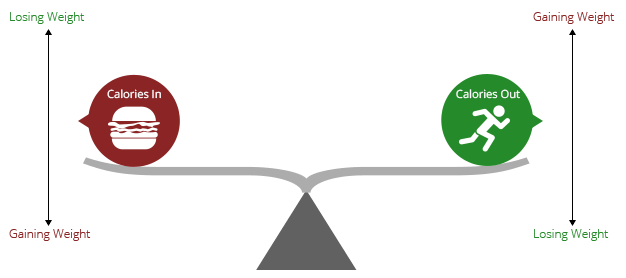

America's
Obesity Epidemic
Throughout the world obesity has become an epidemic. Obesity is a health issue that causes at least 2.8 million deaths world wide each year due to overweight and obesity. Obesity was once associated with high income countries, but now many low and middle income countries are now battling the epidemic according to the World Health Organization.
The United States has been a high income and developed country for a significant period of time. The U.S. government has been collecting weight statistics nationally since the 1960s and state-by-state since the 1990s. The statistics data are made readily available to the public. These facts make the U.S. an excellent candidate to examine overtime.
Obesity in the United States has increased at an alarming rate. Currently, more than 2 in 3 adults are considered overweight or obese. Obesity can also lead to a myriad of health issues such as Type 2 diabetes, coronary heart disease, cancer and other non-communicable diseases which cost the US $147 billion in 2008. Obesity affects people of all ages and demographics. It is “associated with poorer mental health outcomes, reduced quality of life, and the leading causes of death in the U.S.” [2]
Weight management is an issue that everyone has to deal with, and a majority of individuals in the United States have room for improvement. The consumption of less calories, less saturated fat, and more physical activity can all contribute to a healthier America.
The goal of this website is to raise awareness of seriousness of obesity. By creating a place where people can clearly see how the prevalence of obesity has changed over time, and what other factors are strongly associated with it. The hope is that this project will reveal insightful and meaningful information that will lead to change for individuals and possibly for new policy changes in organizations.
In the sections below you first explore obesity rate and trends by US State with an emphasis on geography and year-by-year, then you will dive deeper by analysing relationships among a large number of factors, and finally tools will be presented to help you understand the issue personally so that you can address your own concerns or those of someone you know.
Average American Body Shape By Decade

Weight Distribution of Americans
Overweight and Obesity Over Time
Health Spending Over Time
Obesity Trends across US States
Overweight rates have remained largely unchanged since the 1960s hovering at about one-third of the population. It is clear that obesity in America has increased a staggering amount over recent decades in the US. This is a cause for great concern.
This section is focused on providing tools that allow for comparison states and for analyzing rate changes for specific states over the years.
Not all states have similar rates of obesity in fact there is significant disparity: in 2014, Colorado, the least obese state, had a rate of 21.3% and Arkansas, the most obese state had a rate of 35.9%. The national average in 2014 was 29.23%. The states also tend to fluctuate somewhat in ordering. Colorado has been consistently the lowest or second lowest across the our data set, but Arkansas did not enter the top five worst states until 2012.
The obesity rates have been going up in general in every state year over year, but some states have shown decreases at times and the frequency in which states show decreases has become more often. Though the decreases have been minor these small victories may indicate that the fight in obesity is having some effect. One significant drop occurred in 2004; when compared with 2003 data over half of the states had no increase or had a decrease.
There appears to be some regional groupings of rates. For example the South appears to out pace other areas of the country. Why? You can explore some of the factors that may explain this in a later section.
Mode
Sort
Year
Location
Select States
Obesity Factors
The section above drives home the main point: the obesity rates in America vary significantly by regional grouping. What other regional circumstances contribute to obesity? Aside from genetics and medical problems which are difficult to measure at the state level, obesity is associated with the following risk factors: inactivity, unhealthy diet, and socioeconomic status.
Using data from the Behavioral Risk Factor Surveillance System we are able to explore the relationships between obesity risk factors and obesity rates. Understanding which risk factors are strongly associated with obesity rates can help policy makers implement more effective programs such as the Sugary Drinks Portion Cap Rule:
The factors from the survey that we found most strongly associated with obesity were:
- Daily soda consumption
- People consuming at least one piece of fruit daily (fruit consumption)
- Adults who spent no time exercising (leisure activity)
- Percentage of people watching 3 or more hours of TV daily
- Low income (bottom quintile of income)
The fruit consumption association was a little unexpected but not surprising since many fruits contain high levels of sugar.
The percentage of adults meeting the recommended Aerobic and Muscles Strengthening guideline (weight activity) was most negatively associated with obesity (the more people exercising in each state the lower the obesity rates). Explore the factors for yourself and see which factors have the strongest association with obesity.
Individual Health
We each have a personal role in the fight against obesity. Regardless of the programs or laws that may be placed to help guide people to be healthier, we each are ultimately responsible for maintaining a healthy weight.
Obesity has more consequences than those that are related to the physical body. Studies indicate that obesity may lead to the following issues: [3][4]
- Depression
- Anxiety
- Low quality of life
- Low self-esteem
- Poor academic success
- Fewer friends
- Lower employment
- Low self-image
- Discrimination
- Strained relationships
The good news is that whether you are healthy or overweight, there are steps you can take to maintain or reduce your weight to establish a long-lasting healthy lifestyle. Studies have shown that even losing a little weight can have great impact on your health.
Enter your height and weight below to see your personal health report.
Show me »
Age:
Waist:
What can you do?
There are a lot of different opinions/programs about how to lose and maintain a healthy weight. At the core of them all, there is one core principle. As the CDC instructs on their website:
The best way to effectively lose weight and keep it off is by reducing the number of calories you eat, and increase the number you burn through physical activity. In addition, physical activity provides many health-promoting benefits other than just consuming calories, such as improved mental-health, stronger bones and muscles, improved vitality, and a longer life.[7]
Choose a snack to see how long it will take to burn it off doing various activities.
Maintaining Weight
Show me »
Show me »
Conclusion
Obesity is a major problem for many in the United States and throughout the world. It is important for governments and organizations to continue the fight against obesity, but individuals must take action in their own lives. Through physical activity and informed diet decisions improvements can be made person by person and family by family. Using tools such as the ones given above (BMI and snack calculators) individuals can make better, healthier choices.
Further Reading
- World Wide Obesity
- CDC Childhood Obesity